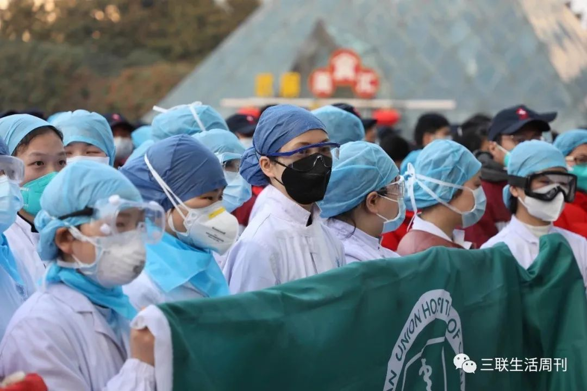
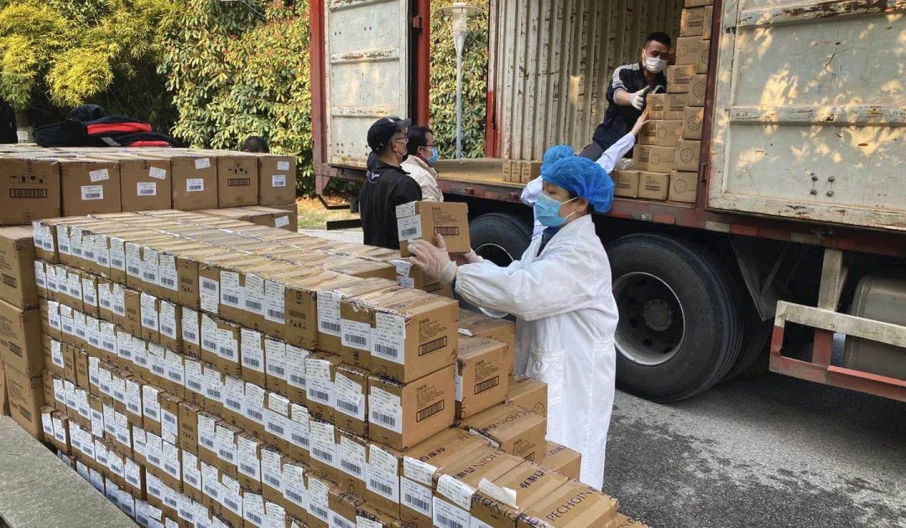
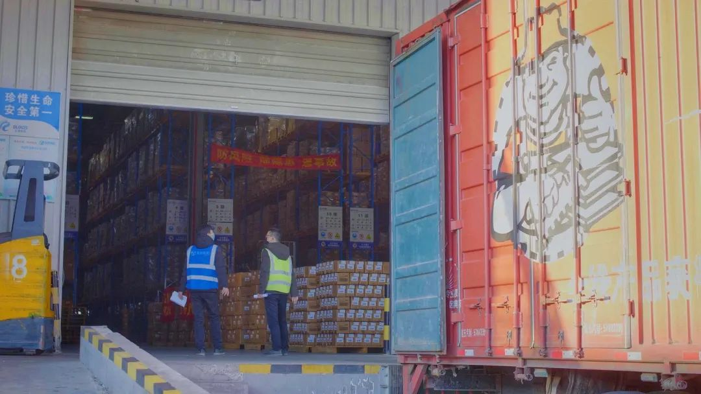
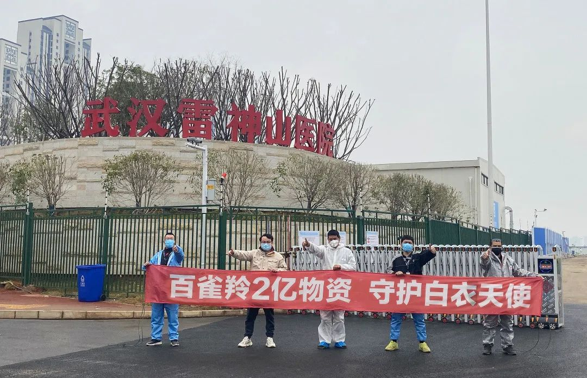
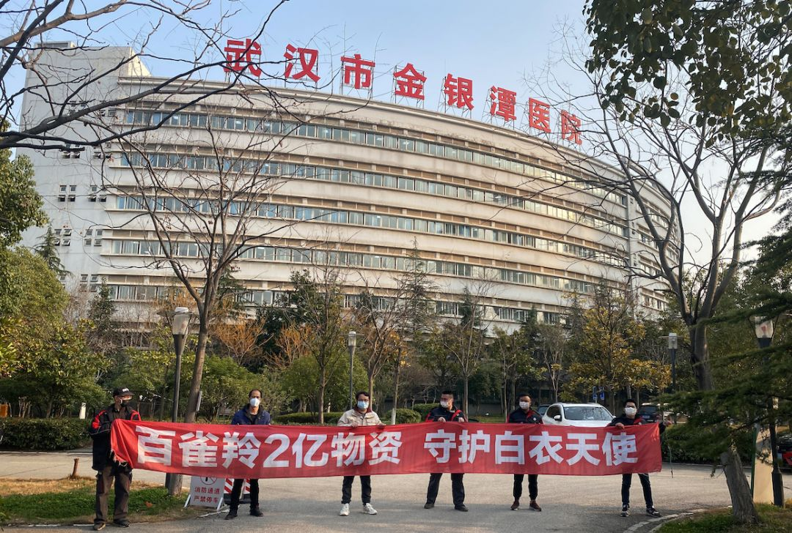

直击武汉：红会掌控物资待发，协和另获捐赠应急
原文链接 备份链接 武汉市已将所有捐赠物资集中统一调配，这有助于物尽其用，但配送效率亟须提升。这几日陆续有社会捐赠物资送到武汉协和医院，但仅有一线医护人员能穿上防护服，很多医用物资仍然紧缺 文 |《财经》 …
//
“在清水里泡三次，在血水里浴三次，在碱水里煮三次，我们就会纯净得不能再纯净”。
托尔斯泰在《苦难的历程》中如此描述人们从革命走向胜利的艰辛过程，在此时，身处武汉的一线医务工作者又何尝不是经历着清水、碱水甚至血水的浸泡，守住了抗疫中的每一天。
······
2月13日以来，全国新增确诊人数和死亡人数都开始明显下降。至暗时刻已过，与新冠肺炎的“持久战”拉开了序幕。

这个曾被称为“东方芝加哥”的城市里骤然安静，却悄然多了数万“居民”，他们是从全国各地抵达武汉及湖北地区的4万余名医务人员。
人们称这些前往一线的医护人员为“逆行者”，象征他们逆着人流、奔赴前线的英勇与果敢，其实，在那些让我们感动流泪的壮举下，在他们度过的一个又一个的抗疫日子里，包含着无数个或艰难或感动或温情的“日常”瞬间——
01
“你忙的时候，就感觉不到饿了”
武汉第九医院 护士 潘茹兰
一个月前的1月22日，整个九院接到了成为定点医院的通知。以前还分科室的护士，集结后被打散、分配到各个楼层。我先是到ICU工作了一个多星期，ICU被陕西支援队接管后，我又被分配到发热留观病区工作。
我上班10年，从来没有觉得：怎么这么难？这个病进展很快，前两天看到病人还蛮好的，两天后马上喘不上气，再过两天人一下就走了。医院里的压抑氛围一直到2月中旬有所消减。无论医护人员、病人，还是百姓，都越来越体会到这是一场”持久战”。

我们现在仍是三班倒。白班是从8点一直上到下午5点，中间不可能休息。为了节省防护物资，再加上反复脱穿防护服，还会增加感染几率。所以只要投入工作，我们就不吃饭、不喝水，饿一天，然后到下午下了班，回酒店再吃。
盒饭吃腻了，我们会在酒店里泡点面，搭配点咸菜，“改善”一下生活。咸菜是同事从家带来的。一包咸菜，用公筷分成四份。
等疫情结束之后，我一定要吃顿烤肉，和同事逛街，赶紧回到原来的生活中去。
02
“和家人联系就像是留言板联系”
雷神山医院 护士 周瑞
（来自上海中医药大学附属龙华医院）
我是上海来的，来自上海中医药大学。事情太多了，乍一想，也记不清是哪天来的，大概是2月15号到的武汉。
我刚到雷神山时，医院还在筹备。每天都有从四面八方赶来的医护人员、管理人员，边工作边磨合。人手不够，所有人都是身兼数职。没有人停在那里，只要有事情或是有任务了，一叫立刻到，像货架、衣柜、病床搬运。
©️ 中新网
可武汉毕竟和家总是不太一样。同事们都说，我们现在和家人有时差。和家人联系就像是留言板联系。凌晨一、两点，我结束工作了，会发个短信跟家人说“我很好”。第二天早上家人看到、再回一个“好的，你注意身体”。但那时我已经又开始工作，看不了手机了。
哪怕有时差，哪怕像留言板，我每天在手机上打出”我很好”时，心里会舒服很多，好像和家近了很多。
03
“全国各地来支援的车，
全部往这个地方集中”
雷神山医院 护士 严翠、翁玲丽
（来自上海市第五人民医院）
我们来自上海，因为响应政府的号召，也没想太多，我们就来了。
昨天我们从路上过来的时候，其实一路上也没有什么人，但是一到雷神山医院附近，人猛地一下就变多了。我看到有好多的工人，医务人员，也看到好多我们上海的医护同仁……
算上我们一起来的500多人，现在支援雷神山的上海医护人员快1000人了。虽然都不认识，可看到防护服，心里的感觉不仅是亲切，更多的是并肩战斗的战友情谊。

©️ 中新网
说心里话，在武汉，工作强度挺大，身上、手上都因为不断消毒或者磕碰的小伤口。身体似乎也习惯了每天穿防护服、戴手套那种从疼到麻的过程。
说不害怕是假的，但一进入这里，看到全国各地的支援全部往这个地方来，害怕、担心就都忘了。今天等车的时候，看到街边叶子都绿了，看到街边都冒绿芽了。希望春暖花开时，举国无恙。
04
“ 真希望在武汉樱花烂漫时，
生活可以恢复到往常的喧嚣”
雷神山综合管理部负责人 黄康
（来自武汉大学中南医院）
1月20日当晚，我们负责的病区投入使用，完成了收治病人。目前生活物资比较充足。我主要负责对接各个地方的爱心企业，每天联系电话不断，已经收到300多个爱心企业的捐赠。我们也将捐赠用品在第一时间全部分发给医护人员。

我们很多医护人员在病房全天十几个小时的工作里，要用酒精来洗手。酒精对整个手的损伤挺大的。很多医生手上指纹都没了。洗护、沐浴和护手用品，现在也不好买。前几天百雀羚送来了第一批护手霜、洗发水，一下子就发光了。
· · · · · ·
在抗疫一线，日夜奋战的医护人员，每次脱下防护服的过程需要洗手12次，每4小时就要重复一次，长时间接触消毒液、酒精等腐蚀性较高的化学制剂，双手被腐蚀得伤痕累累；因长期佩戴口罩等防护设备而在脸上烙下“疫痕”；就近的宾馆、宿舍、临时改建的休息场所里生活物资相对缺乏，白衣天使们的双手和皮肤粗糙开裂。
而这一双双布满伤痕的手，虽是细节，却让百雀羚集团无法释怀。百雀羚集团第一时间成立疫情应对专项小组，迅速联合中国性病艾滋病防治协会、中国预防性病艾滋病基金会与前线各医院取得联系并沟通需求，确定捐赠2亿卫生清洁护理物资的目标。



百雀羚集团第一时间响应，
确定捐赠2亿卫生清洁护理物资的目标
就像上海百雀羚集团市场总监费琪文在采访中所说：“我们希望更加聚焦，让资源能够发挥最大的帮助，当发现有非常非常多的全国各个医疗队的白衣天使们，正在逆行去支援武汉，我们立马觉得应该为这群人做一些我们力所能及的事情。”
△ 百雀羚“在路上”公益纪录片
2月6日，伴随着“武汉加油”“中国加油”的呐喊与祝福，从位于浙江嘉善的百雀羚仓库驶出了第一辆满载着13吨生活物资的卡车。在从浙江到武汉的800多公里路程上，百雀羚捐赠的物资开始源源不断地运往武汉市第五医院、武汉市第一医院、武汉大学附属同仁医院、武汉市第四医院…….



百雀羚已先后落实五批次物资，
累计捐赠价值1.12亿元，支持湖北各地82家医院
截至发稿为止，随着捐赠物资一批批抵达武汉市雷神山医院、武汉市金银潭医院、武汉市江岸方舱医院、孝感市中心医院、黄冈市中心医院……
百雀羚已先后落实五批次物资，累计捐赠价值1.12亿元，已支持包括湖北武汉、孝感、黄冈、随州、襄阳等各地82家医院，让一线医护人员可以在结束一天的辛苦工作后，用上洗发水、沐浴露，洗一个热水澡，临睡前为疲惫的双手涂抹上护手霜。让辛苦的抗疫中，多些暖意和幸福。
“说实话，是有一点小骄傲的，毕竟是用自己的方式，做了一点贡献。”这句从百雀羚驰援行动司机小哥嘴里说出的话，更是百雀羚每一个员工的心声。

©️ 燃新闻
“流感突起，肺炎逼至，想父亲安康？……您于院中应多加留意，谨防传染。吾坚信没有一个冬天不可逾越，病毒肆虐的当下，亦如是。”
这是一个14岁的女孩，给身在抗疫前线医生父母写下的动情文字，我们依然相信没有一个冬天不可逾越、没有一个春天不会到来，恰恰是因为那些最值得敬爱的人们，依然还站在抗疫的最前线，为我们坚守与付出。
医护人员的坚守，因为所热爱的生活。
全国各界的驰援，因为所热爱的生活。
我们每个人的努力，因为所热爱的生活。
即将到来的2020年春天，必定让人难忘。因为有太多的人在终点是胜利的道路上拼搏着、有太多双清水洗过、血水浴过、碱水泡过的手，正竭尽全力地共同打造了每个人都无比热爱的生活。
（文中所用名字均为化名，
图片来自百雀羚、互联网）
策划：三联.CREATIVE
监制：高效
微信编辑/设计排版：赵姝萌
作者：向西、吴楠
特别感谢：潘茹兰、周瑞、严翠、翁玲丽 、黄康
⊙文章版权归《三联生活周刊》所有，欢迎转发到朋友圈，转载请联系后台。

原文链接 备份链接 武汉市已将所有捐赠物资集中统一调配，这有助于物尽其用，但配送效率亟须提升。这几日陆续有社会捐赠物资送到武汉协和医院，但仅有一线医护人员能穿上防护服，很多医用物资仍然紧缺 文 |《财经》 …
原文链接 备份链接 一周前，我在这里写了《武汉，这些天来的街头巷尾》，不少朋友说，很感兴趣，也有意义——包括住在武汉的朋友，因为他们基本就待在家里，很少外出；而我，仍然每天开着车，在这座城市里四处转。 我决定接着写这个话题——我在武汉 …
原文链接 备份链接 24.02.2020本文字数：3380，阅读时长大约6分钟 导读：全国各地驰援力量也投入到了帮助武汉爬坡跨坎的大战之中。 作者 | 第一财经 吴绵强 2月20日晚上，在武汉江夏区方舱医院隔离的每一位患者都收到了一颗“ …
原文链接 备份链接 说辛苦我们真不觉得，这点辛苦不算什么。我们最难过的是很多时候因为供应商停工停产，汽车零部件紧缺，让我们想修都修不好，耽误了事。到目前为止，我已经记不清出了多少次救援任务了，所有一线防疫人员都是在跟病毒赛跑，我们更不能拖 …
原文链接 备份链接 有救援经验的社会组织，响应了。 武汉宣布封城后三小时，郝南就在社交媒体上发布了nCOV Relief（后改名NCP生命支援）志愿者招募书，发起新冠肺炎患者和疑似病人居家隔离治疗项目。郝南身在北京，是卓明灾害信息服务中 …